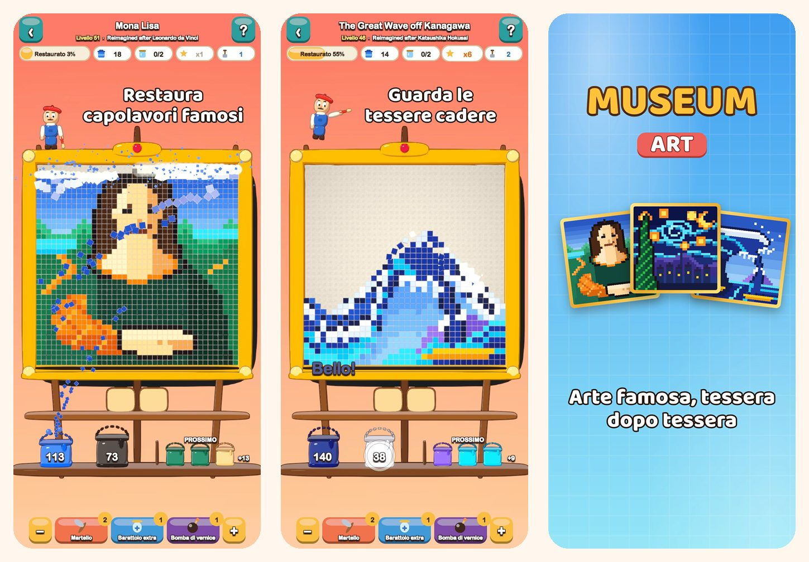

Museum Art
Puzzle di colori in pixel art
Tocca un colore e guarda le tessere cadere. Restaura 51 quadri in pixel art, dalla Gioconda alle strade di Istanbul, Parigi, Roma e New York.
Scarica su App Store
Il gioco
Ogni quadro di Museum Art è fatto di tessere quadrate colorate. Toglile un colore alla volta e guarda il quadro tornare a splendere.
COME SI GIOCA
- Tocca una zona di colore che tocca la fila in basso, oppure un secchio sulla mensola: le tessere volano nel loro secchio.
- Le tessere sopra scivolano giù come sabbia e aprono nuove mosse.
- Non c’è ancora un secchio per un colore? Mettilo in un barattolo sul vassoio.
- Meno usi il vassoio, più stelle guadagni.
51 QUADRI DA RESTAURARE
- Scene allegre e facili per cominciare: una mongolfiera, una barca a vela, un gatto e un faro.
- Natura: cime innevate, un lago di montagna, ciliegi in fiore e un deserto al tramonto.
- Un giro del mondo tra Istanbul, Parigi, Roma e New York.
- Il Caveau dei Maestri: La grande onda, Notte stellata, Ninfee, La lattaia, Impressione, levar del sole e la Gioconda, reinventati in pixel art.
RILASSANTE E CORRETTO
- Ogni livello si può risolvere senza potenziamenti, e riprovare è gratis.
- Potenziamenti per i momenti difficili: Martello, Barattolo extra e Bomba di vernice.
- Ingrandisci i dettagli quando vuoi.
- Una curiosità su ogni quadro.
- Gioca in 19 lingue.